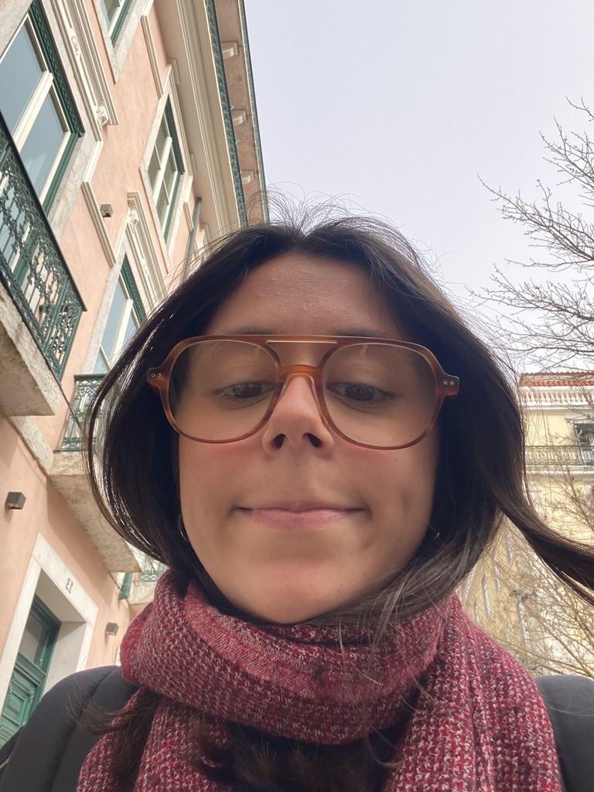

I'm a multidisciplinary designer who sees design as a way to spark reflection, connection and change. I've always loved clear answers like "yes" and "no," but design taught me that often, the real insight lies in "it depends," just like the sky doesn't always have to be blue; it can be green, yellow or even purple.
I'm fascinated by how a simple visual choice can shape meaning, and how emotion, context and intention all play a role in the way we experience what's around us. Whether I'm creating a brand identity, designing a publication, or building a narrative, I'm guided by curiosity and a desire to communicate with clarity and care. I believe good ideas don't just come from the desk — they also grow during long walks, late talks and getting lost in new cities.
Design to me should not only represent the world but also reimagine it, and I'm here for the messy, complex, in-between moments where the best ideas are born.